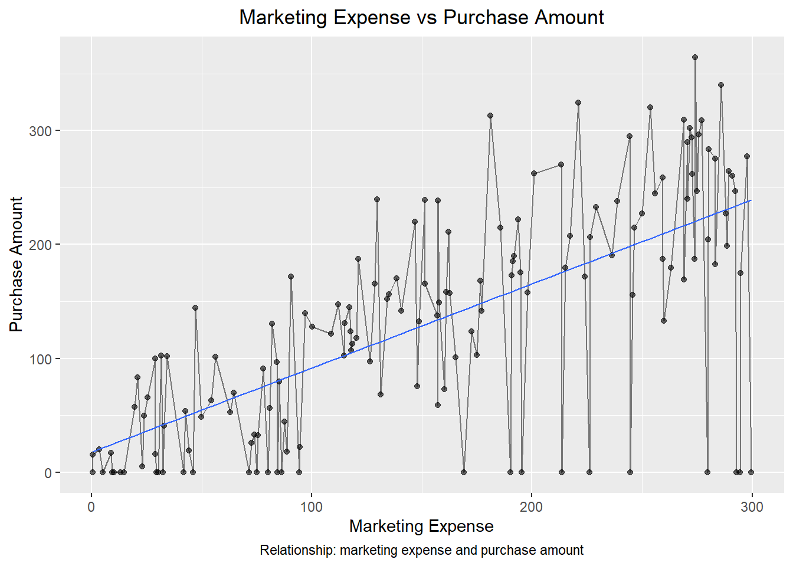

| Avg_marketing | Avg_purchase | Avg_visits |
|---|---|---|
| 154.3833 | 131.7766 | 5.76 |
Campaign Investment Analysis
Introduction
Online retailers often invest in personalised marketing strategies to increase customer engagement and sales. However, it is not always clear whether higher marketing spend per customer leads to greater purchase amounts. This study aims to analyse customer-level data, including marketing spend, visits, and purchase behaviour, to understand this relationship. The findings can help businesses make more informed decisions about how to allocate their marketing budget effectively.
What are we looking at? (Research Question)
It will also include looking at the average purchase v/s the average marketing expense, and which segment of customers purchased the maximum.
Data Set Introduction
The dataset contains customer-level information from a personalised marketing campaign conducted by an online retailer. This dataset consists of 150 observations and 7 variables. Such as:
Customer ID
Signup dates
Marketing expense
Number of visits
Purchase Amount
Customer type
Comments
This data is used to analyse how marketing efforts influence customer purchasing behaviour. To prepare the dataset for analysis, several cleaning steps were performed.
Column names were standardised for clarity, missing or inconsistent values in the comments field were handled, missing purchase amounts were replaced with 0, and date values were converted into a consistent format using the lubridate library. These steps ensured the dataset is clean, structured, and suitable for analysis.
Satistical Analysis of Data
The summary statistics in Table 1 provide an overview of customer behaviour in the dataset. On average, the marketing expense per customer is 154.38, while the average purchase amount is 131.78, indicating that customers generate substantial purchases in response to marketing efforts. Customers visit the platform approx 5.76 times on average, suggesting a good level of engagement.
| Customer_Type | Total_Customers | Avg_Purchase |
|---|---|---|
| Consumer | 90 | 140.0746 |
| SMB | 45 | 123.9920 |
| Enterprise | 15 | 105.3427 |
Among the different customer segments, the Consumer group has the highest average purchase amount, indicating that this segment contributes most to overall sales. These insights provide useful context for understanding customer behaviour before analysing the relationship between marketing expense and purchase amount.
Relationship between Purchase & Expense.
The Figure 1 plot shows a clear positive relationship between marketing expense and purchase amount, with higher spending associated with increased customer purchases. The linear regression model confirms this, explaining approximately 71.9% of the variation in purchase amount (R² = 0.719).
The relationship is highly statistically significant (p < 0.001), indicating a reliable effect of marketing on sales. Despite some variability (residual standard error ≈ 49.75), the results suggest that marketing expense is a strong predictor of customer purchasing behaviour.

Final Result: Do We Still Spend On Marketing?
The answer is a Yes. There are few things that we must give consideration to:
Satistical Outcome: Considering Table 1, one might say that the average expense is more than purchase, however, the difference however is very less, and business growth is a long process, hence the gap will easily be covered to move from breakeven to profit points for the company. Average visits also indicate that customers are engaging with the advertisements. The Figure 1 suggests a strong a relationship and impact of marketing expense on the purchase.
Customer Segments: As seen in the Table 2, there are various customer segments. The company should rather bifurcate it’s strategies of marketing based on the segment of customers the campaign or advertisement is made to target.
Other Factors: Business growth depends on many other factors than just Marketing, and hence, while it does play a major role, brand loyalty, age of the business, seasonality, and target audience also have effects on why the customer would purchase.
Limitations of Data
Missing values: There were certain missing values and string data such as Comments are not exactly recorded consistently for the data set. Date records too were found to be missing.
Mixed pattern: While date section had various formats that was cleaned, empty cells under purchase amount or “NA” was recorded.